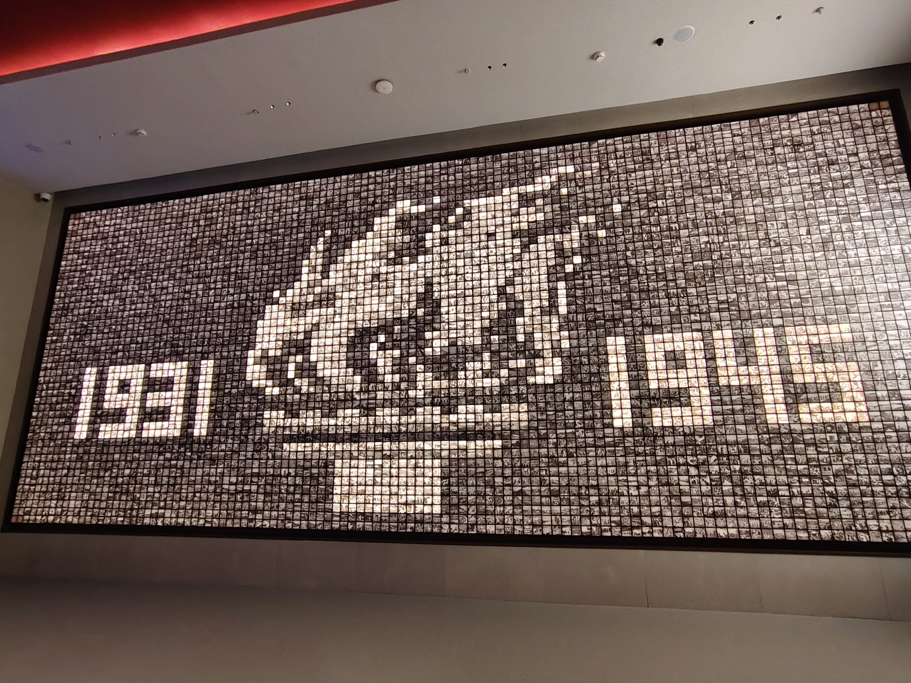
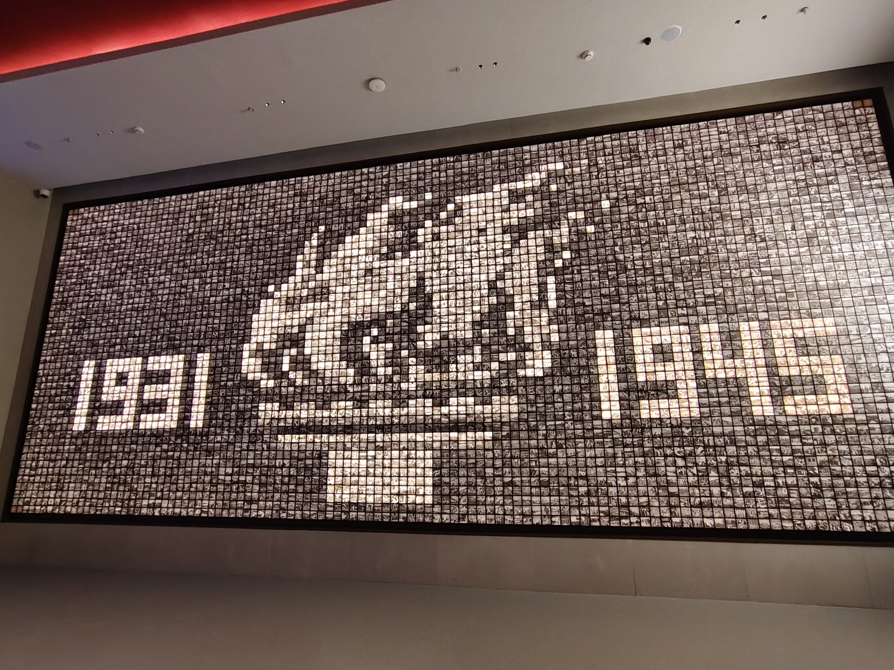

队员风采
何欣妍
队长 / 统筹规划
“纸上得来终觉浅，绝知此事要躬行。”
冯馨梦
副队长 / 影像处理
“用脚步丈量大地，用笔触记录真实。”
宋奕涵
宣传 / 影像记录
“让镜头成为我们的眼睛，讲述无声的故事。”
张虹约
后勤 / 资料整理
“行稳致远，做好团队最坚实的后盾。”
赵恒禾
财务 / 数据分析
“细节决定成败，数据揭示真相。”

杨鑫
联络 / 对外协调
“沟通是连接心灵的桥梁。”
黄白霖
财务 / 数据分析
“细节决定成败，数据揭示真相。”
孙连江
联络 / 对外协调
“沟通是连接心灵的桥梁。”
卢家杰
财务 / 数据分析
“细节决定成败，数据揭示真相。”
刘健
联络 / 对外协调
“沟通是连接心灵的桥梁。”

 
